ricerche_personali/
Progetti auto-promossi, nati da interessi personali e da temi che stanno a cuore, al di fuori di brief accademici o di committenza.
Progetto (digitale) di comunicazione a sostegno della Global Sumud Flotilla per sensibilizzare e diffondere la voce di chi ha deciso di prendere una posizione concreta e a sostegno dell'umanità, a prescindere dalla propria nazionalità.
- Formato
- IG Post (1080 x 1350 px)
- Tipografia
- Mattone
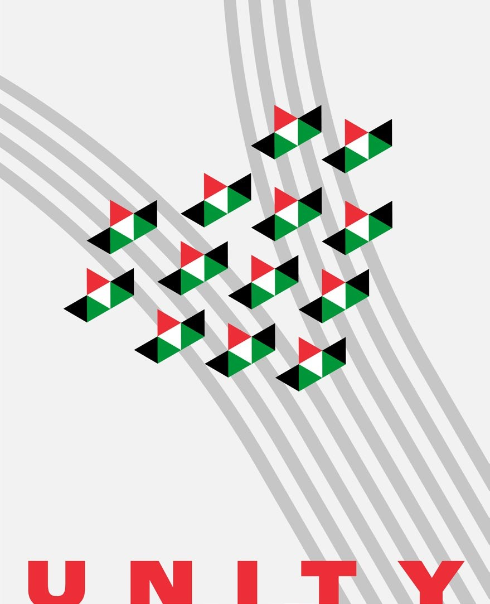
Progetto di comunicazione ambientale pensato per i pescatori d'acqua dolce a scopo di sensibilizzazione e diffusione della pratica del "catch & release". Manifesti destinati ad affissioni presso fiumi, laghi e associazioni di pesca.
- Formato
- A3 (29,7 x 42 cm)
- Tipografia
- Ostrich Sans
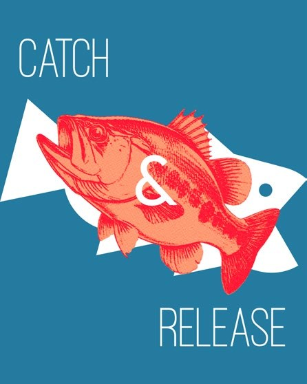
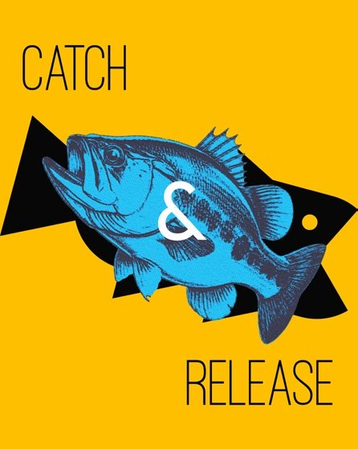
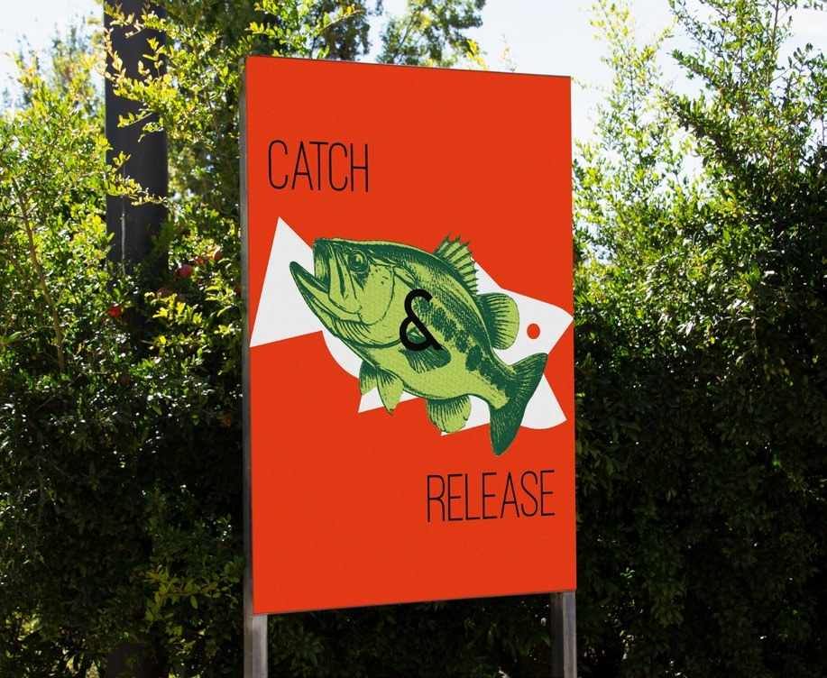
Progetto (digitale) di comunicazione per i pescatori sportivi di mare in occasione dell'inizio della stagione della pesca ai cefalopodi (eging).
- Formato
- IG post (1080 x 1350 px)
- Tipografia
- Source Sans 3
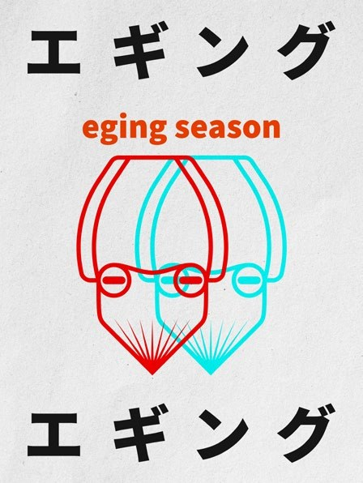
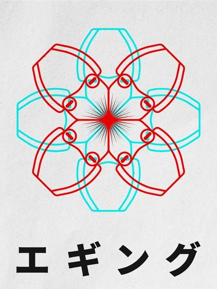
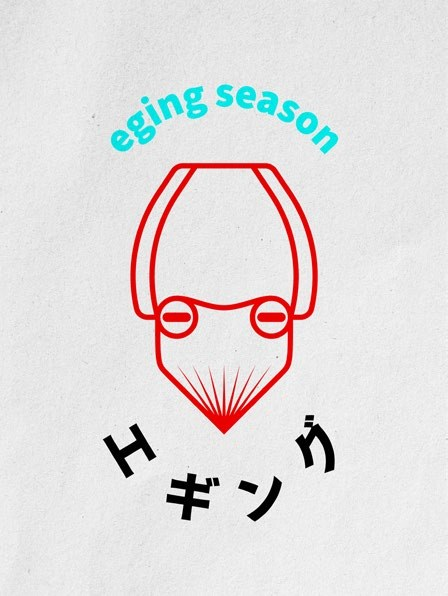
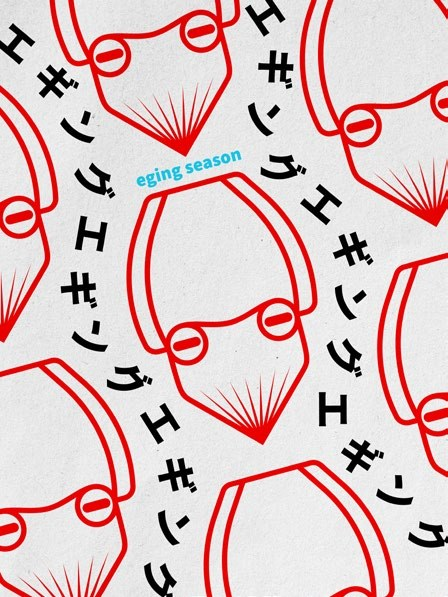
Totally Handmade Tackle è un piccolo brand che nasce in Sicilia. Si pone come obiettivo principale la produzione artigianale di esche artificiali e la promozione del "Made in Sicily" anche nel mondo della pesca.
Brand identity.
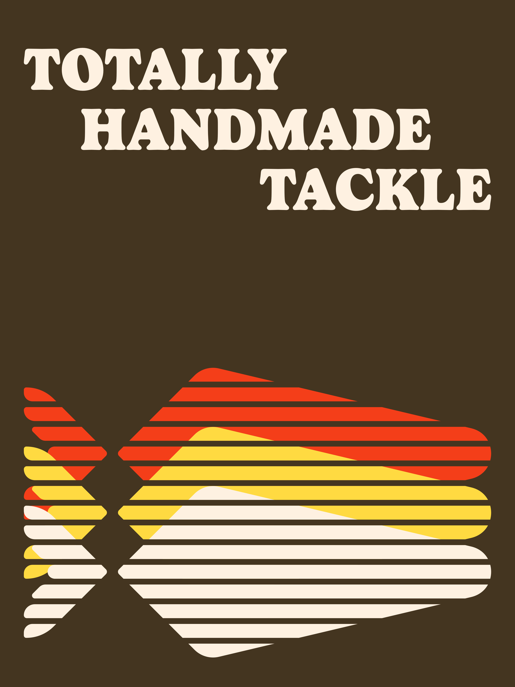
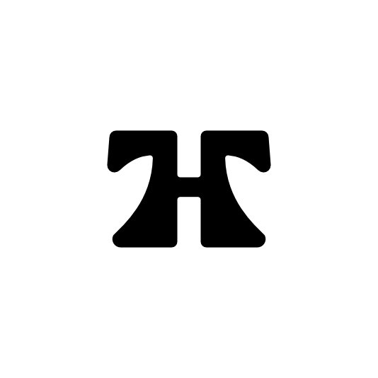
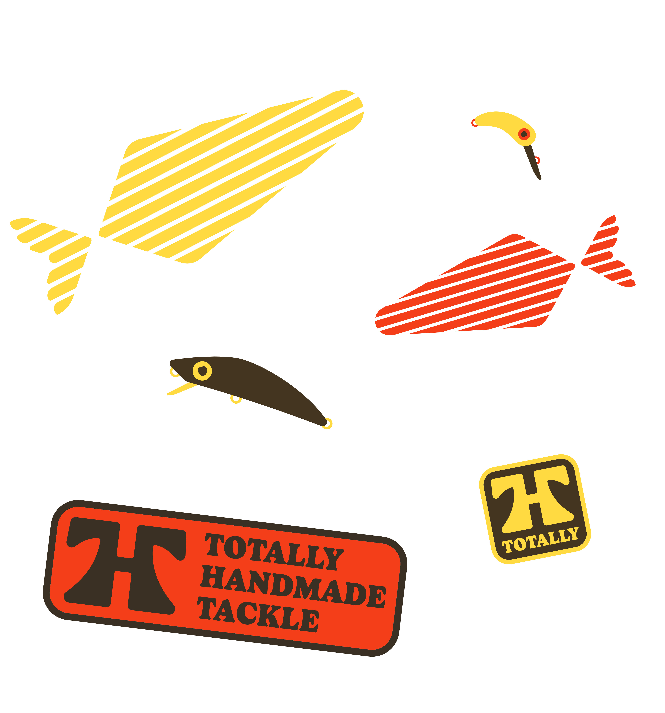
Ispirazioni per il progetto.
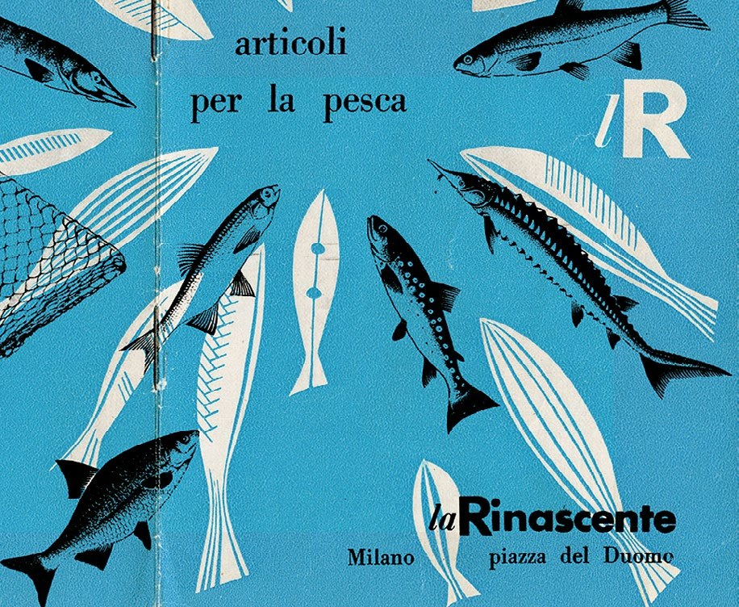
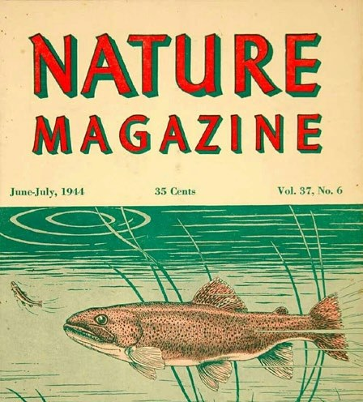
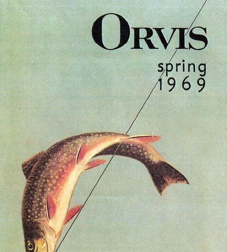